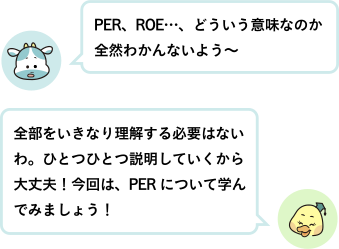
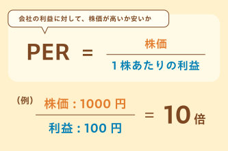

● 株のページに出てくる指標を見てみよう！
証券会社のアプリやウェブサイトで、ある会社の株を調べてみると、こんな情報が出てきます。
・株価
・株価チャート
・PER（株価収益率）
・ROE（自己資本利益率）
・配当利回り

証券会社のアプリやウェブサイトで、ある会社の株を調べてみると、こんな情報が出てきます。
・株価
・株価チャート
・PER（株価収益率）
・ROE（自己資本利益率）
・配当利回り
● PERってなに？
PERは「Price Earnings Ratio」の略で、日本語では「株価収益率」といいます。
簡単にいうと 『会社の利益に対して、株価が高いか安いか』を表す指標です。
PERは以下の式で求めることができます。

PERは「Price Earnings Ratio」の略で、日本語では「株価収益率」といいます。
簡単にいうと 『会社の利益に対して、株価が高いか安いか』を表す指標です。
PERは以下の式で求めることができます。
＜簡単な例で見てみよう！＞
株価：1,000円
1株あたりの利益（EPS）：100円
このとき、PERは 1,000 ÷ 100 = 10倍！
この「10」という数字は、こんなふうに捉えることができます：
① 利益に対して、株価が「10倍」の値段になっている
②現在の株価は、理論上「10年分の利益」になっている
株価：1,000円
1株あたりの利益（EPS）：100円
このとき、PERは 1,000 ÷ 100 = 10倍！
この「10」という数字は、こんなふうに捉えることができます：
① 利益に対して、株価が「10倍」の値段になっている
②現在の株価は、理論上「10年分の利益」になっている
● PERが低い＝お買い得…とは限らない！

・PERが低いのに、会社の業績が悪化している場合
→ 割安ではなく、“みんなが不安に思っている”だけかもしれない
・PERが高いけど、将来の利益がぐんぐん伸びると期待されている会社
→ 少し高く見えても、むしろ“成長株”として割安な場合もある
→ 割安ではなく、“みんなが不安に思っている”だけかもしれない
・PERが高いけど、将来の利益がぐんぐん伸びると期待されている会社
→ 少し高く見えても、むしろ“成長株”として割安な場合もある
● まとめ
・PERは、「利益に対して、株価が高いか安いか」を見る数字のものさし
・一般的に、15倍くらいが基準とされている
・PERが高い会社は「成長を期待されている」、低い会社は「将来を不安視されている」場合もある
・PERはあくまでヒント！数字の裏側まで考えよう！
・PERは、「利益に対して、株価が高いか安いか」を見る数字のものさし
・一般的に、15倍くらいが基準とされている
・PERが高い会社は「成長を期待されている」、低い会社は「将来を不安視されている」場合もある
・PERはあくまでヒント！数字の裏側まで考えよう！
次回は、「ROEってなに？というお話。中級編に入って、内容が難しくなってきましたね。テキストを繰り返し読んで、学んだことを自分の知識にしていきましょう！